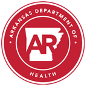
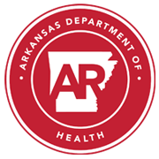
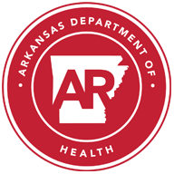
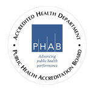

COVID-19 Guidance for Self Home Quarantine
WHAT IS QUARANTINE?
Quarantine is an important way to stop the spread of COVID-19.It means staying home and away from others after you have been exposed to the virus that causes COVID-19.
If you are a close contact to a person with COVID-19, you need to quarantine for a period from the time of the exposure.Close contact, generally, means you were within 6 feet of the person for at least 15 minutes total while they were infectious.COVID-19 patients are considered infectious two days before their symptoms started, or two days before their positive test if they do not develop symptoms.All close contacts should get tested for COVID-19 at least five (5) days after the last exposure to the positive person.
If you are a close contact, you need to quarantine even if you don’t feel sick and even if you have received a negative test.
LENGTH OF QUARANTINE
The incubation period of the virus that causes COVID-19 is up to 14 days.Therefore, the safest quarantine period would last
14 days
from the most recent exposure to the positive patient.
In accordance with new CDC guidelines, quarantine can end after
10 days
without testing if no symptoms have occurred.Or, it can end after
7 days
if no symptoms have occurred and a test returned a negative result.Note that the test sample must have been collected at least 5 days after exposure.Send-off PCR tests are preferred, but rapid PCR or antigen tests are acceptable.
If you are exposed again during quarantine, the period must start over again.If you develop symptoms or test positive for COVID-19 during the quarantine period, you must follow the instructions for isolating yourself.
RESTRICTIONS DURING QUARANTINE
Frequently Asked Questions
Q.If I have had 2 doses of COVID-19 vaccine and have close contact with a positive case, do I need to quarantine?
Vaccinated persons with an exposure to someone with suspected or confirmed COVID-19 are not required to quarantine if they meet all of the following criteria:
Fully vaccinated persons who do not quarantine should still watch for symptoms of COVID-19 for 14 days following an exposure.If they experience symptoms, they should be clinically evaluated for COVID-19.
Also, vaccinated persons should continue to follow current guidance to protect themselves and others, including wearing a mask, staying at least 6 feet away from others, avoiding crowds, avoiding poorly ventilated spaces, covering coughs and sneezes, washing hands often, following CDC travel guidance, and following any applicable workplace or school guidance, including guidance related to personal protective equipment use or SARS-CoV-2 testing.
Additional Help:
For immediate sheltering needs for people who are homeless or displaced or cannot safely quarantine at home, please call (501) 661-2136.For all other issues, contact the ADH call center at (800) 803-7847.
If at any time someone in quarantine as a close contact develops symptoms of COVID-19, they should immediately isolate and get tested for COVID-19 (even if they previously had a negative test during this quarantine).We emphasize that the above options
only
Students returning early from quarantine can resume sports practice or participation, but they should wear a face covering while participating in practice or competition until the full 14-day period is over, unless wearing it would cause a danger of injury or strangulation.The American Academy of Pediatrics (AAP) recently recommended that
all athletes should wear face coverings during athletics, so having those just leaving quarantine before 14 days wear face coverings is a reasonable measure to take for these close contacts who
are
Posted On: 2011-03-21T21:03:55




Content Date: 2011-03-21
Download Date: 2021-04-21
Document ID: L0C04ASUP